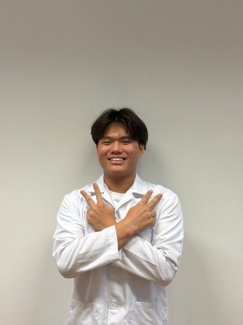
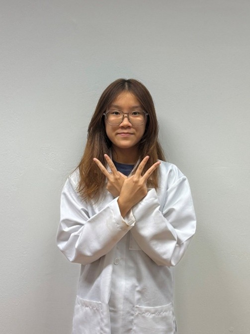

Insights and learnings from our team's journey in developing Vendo Pharmacy
Our Team

Yuhao
Pharmaceutical Science Student
Nanyang Polytechnic
Hi! I'm Yuhao, a Pharmaceutical Science student at Nanyang Polytechnic. I am passionate about exploring how pharmacy operations and technology can work together to improve convenience, safety, and accessibility for patients. This project reflects my interest in creating practical and patient-centred healthcare solutions.
Individual Contribution
•Developed the marketing plan for Vendo Pharmacy using the 4Ps of Marketing (Product, Price, Promotion, Place), ensuring the automated pharmacy model meets patient needs by offering convenience, commonly used medications, and competitively priced products.
•Contributed to the Business Model section by formulating the business strategy and operational approach, ensuring alignment between the value proposition, operational workflow, and service delivery model.
•Facilitated brainstorming sessions and group discussions to guide the team in generating ideas, refining concepts, reviewing content quality, and identifying gaps, ensuring alignment with the project objectives.
•Took full responsibility for designing and developing the project website, translating the Vendo Pharmacy concept into a clear, user-friendly digital platform.
Personal Learning Reflection
•Enhanced my problem-solving skills through converting abstract ideas into practical solutions, especially when designing the website to reflect operational workflows and business objectives.
•Learned to be resilient and embrace challenges throughout the project. Initially, I struggled to understand several aspects of the project, especially the business concepts. However, I did not give up, I actively sought clarification through discussions and self-learning.
•Became more comfortable with stepping out of my comfort zone by going beyond lecture materials and relearning coding skills to develop the website. This increased my confidence in handling unfamiliar topics and enabled me to contribute more meaningfully to the group project.
•Learned to approach decisions from multiple perspectives (patient, partners, and Vendo Pharmacy). Different stakeholders have varying levels of understanding. Hence, I learned to present our ideas clearly, especially when developing the project website to ensure information was easily understood by users from different backgrounds.
Understanding Pharmacy Operations and Business Models
•Gained the understanding that pharmacy operations involve more than just dispensing medications, as they function as an integrated system where automation, inventory management, and regulatory compliance must work together to ensure safe and reliable service delivery.
•Gained insight into technology functions as a strategic enabler in pharmacy operations rather than a standalone solution, as automation must be supported by clear workflows, monitoring systems, and appropriate human intervention to effectively manage operational risks.
•Gained insight into the importance of strategic partnerships and the key considerations involved. Collaborations with healthcare institutions (e.g. NUH) and suppliers (e.g. Hyphens Pharma) strengthen the business model by enhancing credibility, supply reliability, and overall service quality.
•Gained the insight that the pharmacy business model is not about selling more medications to earn higher profits, but about designing operations that sustainably deliver convenience, safety, and trust. Even with strong demand, issues such as poor cost control, system downtime, or unclear communication can undermine the entire business model.
•We faced challenges in setting up Vendo Pharmacy, as it is unlike normal vending machines that sell ordinary retail products. We had to consider patient safety, correct medication use, and the need to provide proper information before dispensing medicine. This made the design more complex, as features such as clear instructions, a safe user flow, and controlled access had to be carefully planned. Through this experience, I learned that technology solutions in healthcare must always prioritise safety, accuracy, and user understanding, not just convenience or speed
Collin
Pharmaceutical Science Student
Nanyang Polytechnic
Hi! My name is Collin, and I am currently pursuing a Diploma in Pharmaceutical Science at Nanyang Polytechnic. I am passionate about healthcare and enjoy exploring how pharmacy services can be made safer, more accessible, and more efficient through practical innovation. I also like research and analysis to solve real-world problems, collaborating with others and learning through real-world projects.
Individual Contribution
•Led the Home Page development, including business introduction, mission, vision, and positioning of VendoPharmacy.
•Designed the Revenue Model, outlining core and secondary revenue streams, setting revenue targets, and aligning assumptions with the business concept.
•Conducted market analysis and customer segmentation, contributing to both the SWOT analysis and the PIRATE funnel framework.
•Wrote the Key Takeaways, synthesising the project's operational, technological, and strategic elements into a clear overall conclusion.
•Facilitated team alignment and refinement, driving discussions to improve clarity, strengthen logic, and ensure consistency across the report/deck.
Personal Learning Reflection
•Shifted thinking: I started with a simple "vending meds faster" idea, but learned that a workable pharmacy model needs the whole system to fit, workflow, compliance, supply chain, patient safety, and tech, or it won't be credible
•Learnt to justify features, not just add them: I initially got excited adding VendAI, Counselling idea and others that did not make it into the project, then realised every feature must answer: what problem it solves, what risk it introduces, and how we control it. That changed how I wrote and designed the model.
•Drawing clear safety boundaries: Early on, I blurred what VendAI should and can do versus what requires a pharmacist. Through revisions, I learned to clearly separate low-risk guidance from pharmacist-authorised P/POM dispensing, which made our proposal much more defensible.
•Started thinking like a sceptic (risk-first mindset): I didn't anticipate issues like downtime, stockouts, and PDPA risks at first. Building mitigation plans taught me that an good proposal must be safe, auditable, and operationally realistic, not just "innovative".
•Learnt to manage conflicting styles in the team: We had different preferences for detail vs simplicity. I learned to align the group by proposing a clear approach, so we stayed consistent.
Understanding Pharmacy Operations and Business Models
•Broadened my view of pharmacy operations: I realised pharmacy services go beyond dispensing. Inventory control, FEFO/expiry checks, QA documentation, Pharmacy staff structure and workflow design are what keep supply safe and reliable.
•Learnt how compliance drives the business model: Requirements like pharmacist authorisation for P/POM, PDPA, and audit traceability directly shape what can be automated and where safeguards must be built in. An example would be when we explicitly separated regulated supply into pharmacist-controlled steps rather than treating everything as a simple vending transaction.
•Understood how operations affect patient trust and revenue: Stock availability, refilling, and wastage control influence user experience, retention, profitability and patient confidentiality showing that operations and business outcomes are tightly linked.
•Developed a customer-journey mindset: Doing the PIRATE funnel helped me design for adoption and repeat use, not just a "good idea," which is crucial in healthcare where trust takes time. I stopped assuming people will automatically use the machine and started designing content and touchpoints that reduce hesitation.
•Reality check: As i was doing the pirate revenue, I realised how heavy the upfront and ongoing costs are and how long it could take just to break even. That pressure forced me to think much harder about all the possible revenue streams beyond “medication sales” we could increase our revenue from. This was where the idea of VendAI started to form, as a way to add value through decision support, guided recommendations and scalable support features
Olivia
Pharmaceutical Science Student
Nanyang Polytechnic
Hi! My name is Olivia, and I'm currently pursuing a Diploma in Pharmaceutical Science at Nanyang Polytechnic. I'm passionate about improving healthcare outcomes through patient-centred pharmacy services, and I enjoy analysing problems.
Individual Contribution
•Developed the daily business operations plan, including 24/7 service model, location strategy, refilling workflow, and POM locker operations.
•Designed the business operations and strategy, including 24/7 service model, neighborhood placement, refilling workflow, and POM locker operations.
•Proposed and structured technology integration, including AI-driven inventory & expiry management, EPS–Singpass POM dispensing, and tele-pharmacy counselling.
•Contributed to the revenue model, especially the commission-based partnership with NUH and monetisation of locker usage and tele-pharmacy services.
•Actively contributed to service ideation and user-facing elements, including new vending machine features and the final call-to-action to improve patient adoption.
Personal Learning Reflection
•Broadened my perspective on pharmacy operations: Previously, I focused on how automation could improve convenience for patients, but through developing the model I became much more aware of the operational backbone behind it. Designing Vendo Pharmacy's system forced me to think about things like stock management, safety controls, and how these elements must be coordinated for its services to function reliably.
•Adopted a patient-centred approach to vending-machine design: I used to suggest idealised features that were ambitious but not always practical. Reflecting on barriers such as limited pharmacist availability at retail pharmacies, the lack of pharmacist counters, and the inconvenience of travelling just to purchase a single item helped me design features that were more practical, relevant, and commercially viable.
•Learned how to utilise AI meaningfully: I initially viewed AI as largely theoretical and doubted how much value it could add, but through this project I saw how it could support real operational decisions such as inventory forecasting, stock optimisation, and even Vendo Pharmacy's product-recommendation service, VendAI when properly integrated into pharmacy processes.
•Improved ability to integrate multiple systems: I developed stronger skills in aligning different technologies, including AI, tele-pharmacy, and EPS, within a single workflow rather than treating them as separate features.
Understanding Pharmacy Operations and Business Models
•How vending machine pharmacies fit into healthcare: Designing Vendo Pharmacy helped me see how automated dispensing, tele-pharmacy counselling, and hospital partnerships allow vending machines to function as extensions of hospital pharmacies rather than standalone services.
•Realised the need for multiple revenue streams: Contributing ideas such as travel medication kits and consultation services taught me that vending pharmacies cannot rely only on medicine sales to remain commercially viable, especially since public demands are bound to evolve.
•Learned how regulations shape automated pharmacy models: Working on the POM locker system, workflow, and Singpass–EPS checks showed me how legal requirements set clear boundaries on what can be automated and keep dispensing safe for vending machine pharmacies.
•Technology as an essential clinical and operational tool: I learned how AI and tele-pharmacy can improve efficiency through functions such as inventory forecasting, decision support, and real-time counselling, while still preserving pharmacist oversight rather than replacing professional judgement.

Michelle
Pharmaceutical Science Student
Nanyang Polytechnic
Hi! My name is Michelle, and I'm a Diploma in Pharmaceutical Science student at Nanyang Polytechnic. I'm interested in how pharmacy operations, technology, and patient safety come together to make healthcare more accessible.
Individual Contribution
•Defined Vendo Pharmacy's unique value proposition by identifying its core differentiators and demonstrating its cost-effectiveness.
•Conducted market analysis and customer segmentation, contributing to both the SWOT analysis and the PIRATE funnel framework.
•Authored the key takeaways by evaluating Vendo Pharmacy's operational model, product offerings, strategic partnerships, and unique services.
•Developed the future business evolution section to highlight plans for nationwide expansion and continued delivery of quality care.
•Actively participated and facilitated team discussions to refine concepts, enhance clarity, and ensure consistency across all sections.
Personal Learning Reflection
•Shifted my view of innovation: I initially saw technology as a way to improve speed and convenience. Through this project, I learned that innovation in pharmacy must be grounded in patient safety, regulatory compliance, and realistic workflows to be credible in practice.
•Learnt to integrate clinical and business thinking: I came to understand that clinical decisions directly shape business outcomes such as accessibility, cost-effectiveness, and patient trust, and that both must be designed together rather than in isolation.
•Biggest growth: developing a risk-first mindset: I realised I focused too much on what was possible and not enough on feasibility and regulatory boundaries. Evaluating risks and constraints helped me design solutions that were more realistic and defensible.
•Gained confidence through collaboration: Integrating team feedback strengthened my communication and confidence in contributing ideas that balance innovation, patient safety, and operational efficiency.
Understanding Pharmacy Operations and Business Models
•Broadened my understanding of pharmacy operations: I initially viewed pharmacy work mainly through the lens of dispensing. This project helped me appreciate the operational backbone behind safe and sustainable services, including inventory control, storage standards, regulatory compliance, staffing, and workflow design.
•Developed appreciation for implementation complexity: I learned that successful automated healthcare services require disciplined planning across logistics, regulation, technology integration, and user experience, reflecting the real-world complexity of pharmacy operations and business strategy.
•Reframed the role of technology in pharmacy practice: I came to see technology not as a replacement for pharmacists, but as a support system that enhances efficiency, accuracy, patient safety, and continuity of care, while preserving professional oversight and clinical judgment.
•Shifted my understanding of automated pharmacy operations: I initially focused on automation as a technical solution. This project highlighted how effective automated pharmacy services require the careful integration of clinical care, technology, and logistics to remain safe, efficient, and patient-centred.
References
Content to be added
This section will be updated with references and citations.